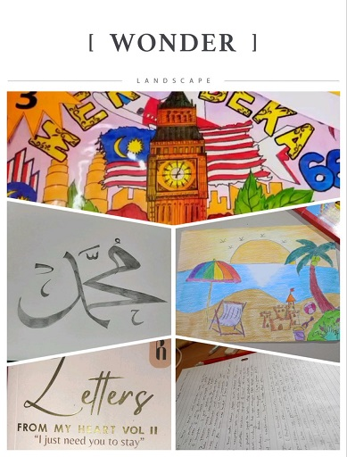
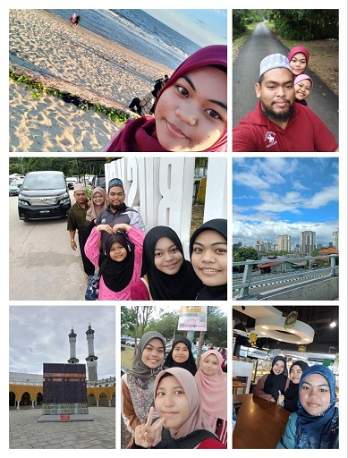
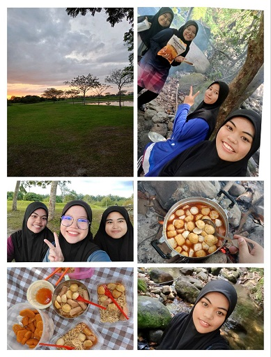
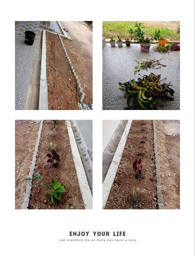

|

|
Drawing and Reading.
Drawing is the art of creating visual images on a surface, such as paper, using pencils, pens, or brushes.
Reading involves interpreting written symbols to derive meaning, often for learning or pleasure.
These activities can enhance creativity, improve concentration, and foster imagination.
They also provide a form of relaxation and can be a great way to escape into different worlds through stories and illustrations. It also have the advantages of this activity, such as:
Enhances Memory: Drawing has been shown to improve memory by nearly double compared to writing.
Boosts Creativity: Both activities stimulate the imagination and can lead to increased creativity.
Reduces Stress: Engaging in these hobbies can help lower stress levels.
|
|

|
Traveling.
Travel is the act of moving from one place to another, which can be for various purposes like leisure, business, or exploration.
It broadens one's horizons, exposes individuals to new cultures and ideas, and can lead to personal growth.
Traveling also offers opportunities for adventure and the creation of lasting memories. Many benefits that we can get from travelling, likes:
Promotes Physical Health: Traveling can decrease the risk of heart disease and improve physical well-being.
Boosts Creativity: Exposure to new experiences and environments can spark creativity.
Strengthens Relationships: Sharing travel experiences can strengthen bonds with others.
|
|

|
Camping/ picnic.
Picnicking is a leisure activity that involves eating a meal outdoors, often in a scenic setting, while camping involves staying overnight in an outdoor area, typically in a tent.
Both activities encourage spending time in nature, which can reduce stress and increase physical fitness.
They also promote bonding with family and friends through shared experiences. We can learn new things and get the advantages from this activities, such as:
Increases Physical Activity: Being outdoors encourages more physical activity, which can improve overall health.
Improves Mental Health: Nature has a calming effect, reducing anxiety and promoting mental wellness.
Connects with Nature: Spending time in natural settings can foster a greater appreciation for the environment.
|
|

|
Planting.
Planting is the act of cultivating plants, which can range from food crops to ornamental flowers and trees.
This hobby can provide a sense of accomplishment and connection to the earth.
It's beneficial for the environment and can also be therapeutic, offering a peaceful retreat from the hustle and bustle of daily life. We can learn new things by planting, likes:
Fights Disease: Gardening can help your body fight disease by providing vitamin D and supporting the immune system.
Builds Strength: It's a form of exercise that uses major muscle groups, promoting physical strength.
Improves Mental Health: Gardening can smooth mood swings and sharpen brain function.
|